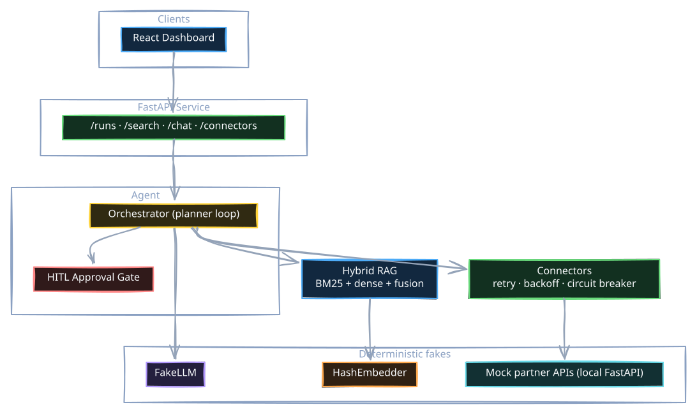
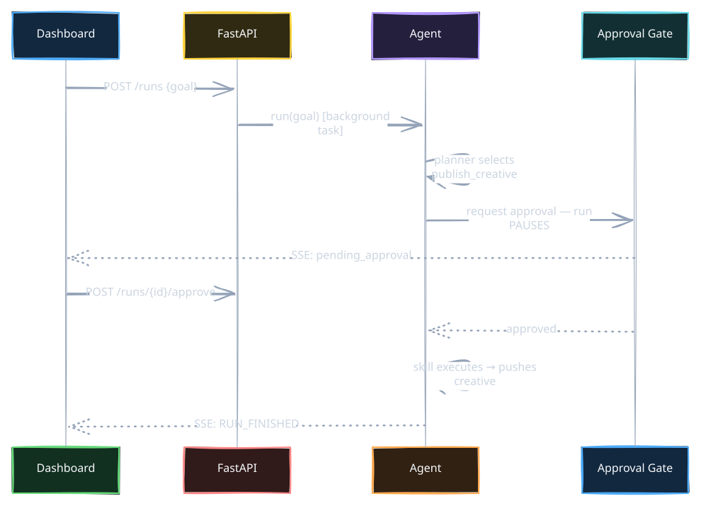
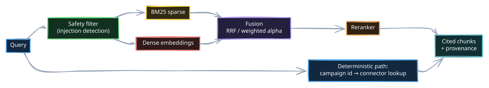

I kept running into the same wall while building AI-powered integrations: you can't write a reliable test suite on top of a non-deterministic, metered API.
Unit tests that call a real LLM are slow, cost money on every CI run, flake when the provider has a bad day, and — worst of all — return different output for the same input. So most agent projects I've seen either skip testing entirely or mock so aggressively that the tests verify nothing.
I wanted to know what it would take to build a complete agentic system — planner loop,
tool calling, RAG, human-in-the-loop approvals, evals — that runs fully offline,
deterministically, with zero accounts or API keys, and where pytest in CI
actually exercises the whole stack.
The result is the AI Integration Sandbox (MIT licensed). This article covers the three design decisions that made it work, because I think they generalize to any serious AI system:
- Deterministic fakes at every external boundary
- A human-in-the-loop gate that is structural, not optional
- Evals as CI gates, not dashboards
The architecture in one picture
The system simulates an AI-native integration hub: an agent that syncs campaign data from fake ad-network partners, publishes creatives (with human approval), and answers questions grounded in a document corpus via hybrid RAG.

Every box in the "fakes" cluster — the LLM, the embeddings, the partner APIs — is a local, deterministic implementation behind the same interface a real provider would use. That's the whole trick, and it's less limiting than it sounds.
1.Deterministic fakes at every external boundary
The FakeLLM is not a mock that returns "mocked response". It's a small
rule-based engine that does two things well enough to drive a real agent loop:
-
complete()extracts the most relevant sentence from anyCONTEXT:block in the prompt — so RAG-grounded answers are real answers, derived from actually-retrieved chunks. -
tool_call()selects a tool by matching the user's goal against tool names and descriptions, and fabricates schema-valid arguments from each tool's JSON schema.
class FakeLLM:
"""A deterministic stand-in for a real LLM.
- `complete` echoes a compact, rule-based summary of the prompt.
- `tool_call` selects a tool by keyword-matching the latest user
message against tool names/descriptions, and fabricates plausible,
schema-shaped arguments. This is enough to drive the agent loop.
"""
The same idea applies to embeddings (HashEmbedder: a deterministic hashed
bag-of-words — no model download, same vector for the same text, every time) and to the partner
APIs (three local FastAPI apps that deliberately differ: one uses Bearer tokens with cursor
pagination and 429 rate limits, one uses API keys with offset pagination, one uses Basic auth
with multipart uploads — so the connector abstraction has to earn its keep).
Why this matters: because everything is deterministic, the test suite can make
strong assertions. Not "the agent returned something" but "given this goal, the planner
selects publish_creative, the approval gate fires, and after approval the connector
pushes exactly this payload." 78 test functions run in CI on every push, offline, in seconds.
Swapping in a real provider is an environment variable
(AIH_LLM_PROVIDER=anthropic), because everything codes against an
LLMClient protocol, not a vendor SDK. The fakes aren't a compromise — they're the
test harness the real system runs inside.
2.Make the human-in-the-loop gate structural
Most "human in the loop" implementations are a print() and an input().
The interesting problems only show up when the approval is asynchronous — the agent is
paused mid-run on a server while a human decides in a browser.
In the sandbox, every skill declares side_effect: bool. The orchestrator refuses to
execute a side-effecting skill without a decision from an injected Approver:
if skill.side_effect:
proceed = await self._gate(trace, skill.name, call.arguments)
if not proceed:
messages.append(
ChatMessage(role="assistant", content=f"{skill.name} denied; skipped.")
)
continue
The gate parks the run on an asyncio.Future that only resolves when a human hits
Approve or Deny in the dashboard (or a timeout auto-denies it). The run trace, streamed over
Server-Sent Events, shows the pause in real time:

Three details I'd insist on in any production version, all present here:
- The gate is enforced by the orchestrator, not the skill. A skill can't forget to ask.
- Denial is a first-class outcome. A denied run ends with status
deniedand zero side effects — asserted in tests. - Approvals time out. A pending approval auto-denies after a configurable window instead of parking a coroutine forever.
Because the whole flow is deterministic, the approval pause itself is unit-tested — something I've never been able to do against a live LLM.
3.Evals are CI gates, not dashboards
Retrieval and generation quality are measured by an eval harness with committed thresholds. This file lives in the repo:
{
"retrieval.recall_at_3": 0.75,
"retrieval.mrr": 0.75,
"retrieval.ndcg_at_3": 0.75,
"generation.llm_judge": 0.5,
"tool_selection.accuracy": 0.66,
"redteam.block_rate": 0.5,
"rerank.quality": 0.5
}The runner executes every suite — retrieval (recall@k, MRR, nDCG), generation (LLM-as-judge), tool selection accuracy, and a red-team suite probing prompt injection — prints a scorecard, writes a timestamped report, and exits non-zero if any metric drops below its threshold. CI runs it after the test suite.
That last property changes behavior. If I "improve" the chunking strategy and recall@3 falls from 0.80 to 0.70, the build breaks. Quality regressions get caught in code review like any other bug, instead of being discovered in a dashboard three weeks later. Determinism is what makes this honest: the score can't fluctuate, so a red build always means my change did it.
The RAG pipeline being evaluated is a real hybrid setup, not a toy:

One framing from this pipeline that I now use everywhere:
Retrieve prose, look up facts.
Text retrieval is probabilistic — right for policies and documentation. But when a query
references a structured entity (a campaign ID, a price, a status), the retriever fetches the
authoritative record from the source system and returns it labelled with its provenance
(connector:pulseads vs doc:faq-3), so the downstream answer is
auditable.
What this deliberately doesn't do
Honesty section. The FakeLLM is not intelligent — it keyword-matches. It cannot handle novel goals, multi-step reasoning it wasn't shaped for, or ambiguity. This sandbox teaches and tests architecture: the gates, retries, budgets, traces, and evals that surround the model. The model itself is swappable precisely because everything else doesn't depend on its cleverness.
If your takeaway is "fakes can replace real model testing," that's the wrong lesson. You still need eval runs against real models before shipping. The right lesson is that the deterministic layer is where 90% of your bugs live — the pagination bug, the missing retry on 429, the approval race, the unbounded chat history — and none of those need a $0.01-per-assertion API call to catch.
Try it
git clone https://github.com/madosh/ai-integration-sandbox
cd ai-integration-sandbox
python tasks.py setup && python tasks.py test # offline, deterministic
docker compose up # full stack: API + dashboard + mock partnersStart a run in the dashboard with the goal "publish the new creative to creativebox", watch the planner select the skill, and watch the run pause at the approval gate waiting for your click. That pause — a coroutine parked on a Future while a human decides — is my favorite part of the whole system.
The repo is MIT licensed. Specs for every module live in specs/ (each feature was
spec'd before it was built), and the eval datasets, thresholds, and mock partners are all in the
tree. Break it, extend it, or steal the patterns.
Explore the code
The repo has deeper dives waiting: a connector framework with circuit breakers and keyset pagination, an A2A (agent-to-agent) JSON-RPC surface, seven memory types, and an MCP server exposing the same skills to any MCP client.
View on GitHub ↗